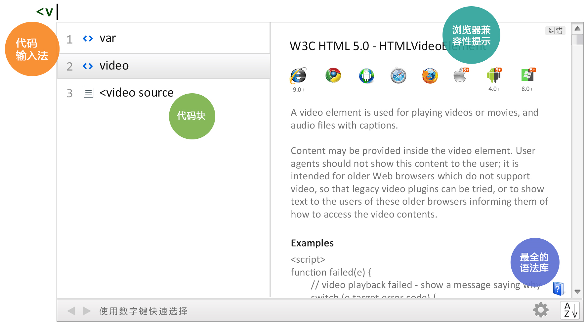
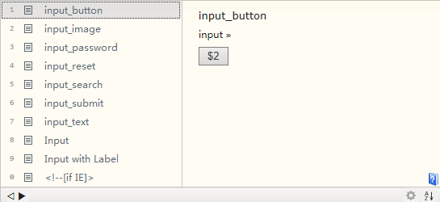
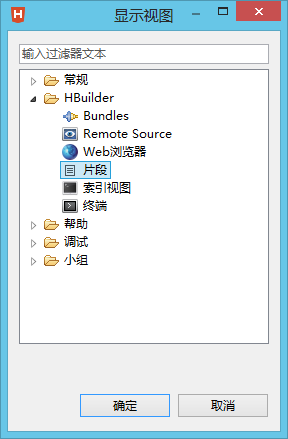
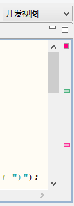

了解HBuilder

1、代码助手，飞一样的编码
代码输入法：一个数字键，少按10下键盘。
按下候选列表前的数字，自动把该候选项输入到编辑区。
代码块：一个代码块，少按20下键盘。
图标为 的候选项为代码块。
代码块是常用的代码组合，比如在js中输入$，回车，则可以自动输入document.getElementById(id)。
再举例，在HTML中输入i，回车，可以得到input button标签。

查看所有代码块，可以点击顶部菜单，视图->显示视图->其他，在下面的界面选择片段。一般而言，HTML代码块的激活是不输<而直接输字母，比如输入i，可以激活input，输入m可以激活meta。而输入<i和<m，则激活了对应的语法。

全时提示
HBuilder不仅仅提示全面的语法，非语法的各种候选输入也都能提示。包括图片、链接、颜色、字体、脚本、样式、URI、ID、class、自定义JS对象、方法。
举例，在img src=后激活代码助手，可以看到本工程所有图片列表；输入<sc可以看到本工程所有js列表；在js的document.getElementById(id)中提示本工程已经定义的ID列表；在css的color:后可以列出本工程所有使用过的颜色。
Emmet支持
HBuilder内嵌了emmet（即zencoding）插件。输入div#id1，按下tab，可以自动生成 <div id="id1"></div>。Emmet的详细语法请查阅其官方网站emmet.io。
Jquery支持
HBuilder内嵌了jquery插件，可以提示jquery语法。但该插件为三方开发，与HBuilder的代码助手还没有整合到一起，不能使用数字键输入候选项。
2、绿柔，保护你的眼睛
绿柔主题的特点是柔和、低对比度、强光可见、绿色感加强。对着这样的界面写一天代码，感受要比对着太亮或太暗的界面舒服很多。
详细可参考HBuilder发布会时美女设计师的演讲实录：
最近有部电影叫盲探，其中刘德华盯了4天嫌疑犯眼睛就瞎了，眼睛很重要但也很脆弱。
我们现在的生活中到处是电子屏，电脑屏、手机屏、平板、电视，无论上班下班，我们都对着这些屏幕。这个时代保护眼睛更重要。一定不能程序员让在写代码时受更多罪。所以我们很重视配色方案。
我们调研了所有主流配色方案。没有满意的。有的很漂亮，但长时间看不舒服。所以我们决定自己调，但我们的设计目的不是为了好看，而是为了更健康。
色彩方面有色彩生理学和色彩心理学。我们先来看色彩生理学，当一个人眼睛长期看暗色系事物时，大脑会分泌激素强迫眼睛增强视力，比如我们在一个黑屋子待一会就能看清东西，但回到阳光下时又会晕眩，这叫做暗适应。暗适应会让程序员很不舒服，所以我们不能选暗色系。
再看色彩心理学，不同的色彩给人以不同的心理感受。红色让人感到刺激，绿色让人感到舒适，因为人们会联想到不同的事物从而引发心理的变化。
基于这些分析，调了上百次后，我们得出这样的方案，我们叫它绿柔。它的特点是柔和，自然，低对比度，并且强化了绿色的感觉。我们把各种颜色中的RGB中G，就是绿的数值调的更高。
我们做了样本测试，结果不错，程序员们在使用了一天绿柔界面后都表示比看一天其他软件更舒服。
最后衷心祝愿大家在满是电子屏的世界中，活的更健康！
3、最全语法库和浏览器兼容数据
HBuilder的语法库包括W3C的HTML、JAVASCRIPT、CSS的正式标准和推荐标准...，ECMAScript中浏览器支持的部分，还有各大浏览器的扩展语法，webkit、moz、ms，均实时更新到各浏览器的最新版本。
信息栏中的浏览器品牌图标，全亮表示无障碍支持该语法，全灰表示不支持，而半亮则表示该浏览器部分支持该语法。半亮时会下图标下方显示出来详细的支持情况，比如video标签，从IE9才开始支持。
4、更多挖宝
跳转助手、选择助手、转义助手、快捷键助手，让你手不离键盘。
HTML5+支持、手机真机连调、云编译，方便开发跨手机平台的App。
更多精彩功能：重构 | 大纲 | 任务 | 版本历史 | 内置webserver | 实时升级 | 安全工程管理 | 包围 | 掩码转换 | 智能纠错 | 折叠代码 | 转到定义 | 格式化代码 | URL编解码 | 进制转换 | 自动闭合。
还不满足？下载插件增强更多功能，高手更可开发插件，并共享插件造福所有开发者。
5、FAQ
什么是HTML5+？
HTML5+规范是基于HTML5的扩展规范，用于弥补HTML5和原生应用功能之间的差距。HTML5+规范是一个开放的规范，在W3C中国的指导下，由HTML5中国产业联盟运作（www.html5plus.org），所有规范都是面向开发者的，开发者提需求、开发者评审实现方案、开发者投票选定规范。
什么叫滚动条信息点？
当代码中有重要的标记出现时，会生成滚动条信息点，在滚动条右侧出现颜色各异的点。点击这些点或使用跳转到下一个信息点功能，可以快速到达这些代码处。如下标记会生成信息点：书签、任务、错误提示。
